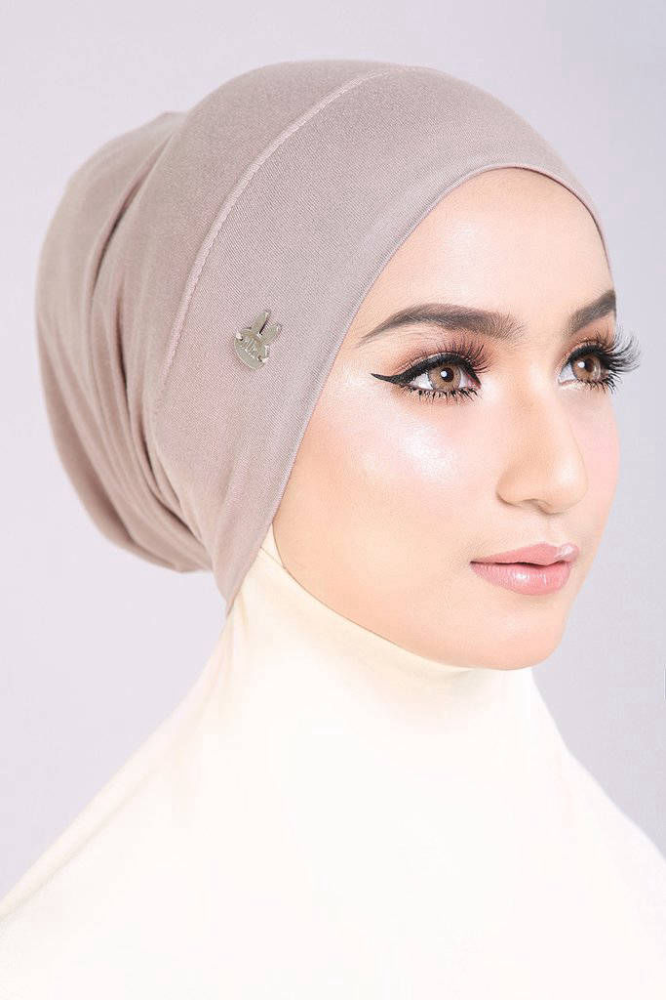
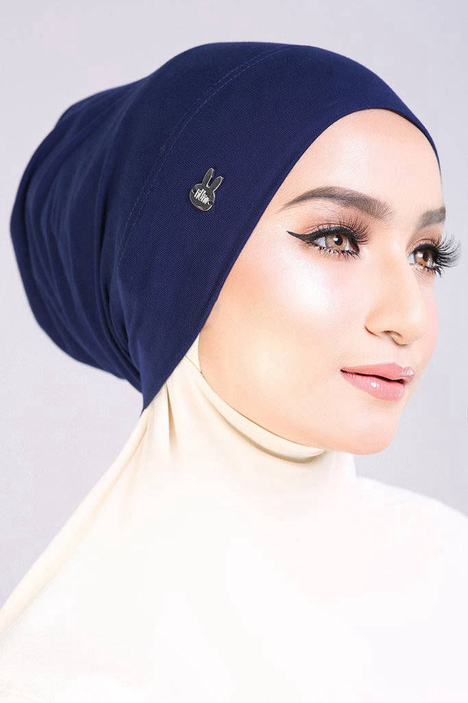

Trying to look put-together in a hijab can be a challenge, especially when you're rushing and pressed for time, you need tools that can help ease the process along. An inner neck is an important one because it is the foundation for your hijab. You need one that will keep your hair fully covered and in place so you won't fret about hair showing or strands peeking through. That's why we decided to launch our very own AifaHana Hijab Inner Neck.
This snug, well-fitting inner neck will make getting ready so much more simpler, just put it on, tuck your hair in, slip on your hijab and you're done!
The stretchy fabric fits perfectly, keeping your hair in so you'll look immaculate all day. There's an elastic at the back of the inner to give it some stretch, this makes it fast, easy and more comfortable to wear.
It provides maximum coverage for the neck and head area so you don't have to worry about showing your skin even when your hijab is sheer. You can even use it when you're working out or playing sports, it will keep you covered no matter how hectic or strenuous your activity might be.
Retail Price :
Semenanjung Malaysia : RM 15
Sabah / Sarawak : RM 20
Collection : Inner Neck
Material : Premium Cotton Lycra
This is definitely one of our most requested inner so far. For that, we are more than happy to introduce you to our latest addition in our collection, Najwa Inner. It is made from cotton lycra, a smooth knit fabric comprised of natural cotton and lycra. A perfect fabric as it has an excellent stretch and recovery, and most importantly, it is an all-season comfort. Comes in 8 colors, this is your must-have inner for sure!
Collection : Najwa Inner
Material : Cotton Lycra
Type : Inner
Price: RM 20 (Semenanjung Malaysia)
RM 25 (Sabah & Sarawak)
Aisya fans are in for a treat because here comes the perfect partner for your favourite hijab - the Aisya Inner.
The Aisya Inner produces a neat and immaculate look by keeping your mane away from your face, preventing any stray hair from peeking through your hijab. The high-quality cotton lycra fabric provides a smooth finish and plenty of stretch to cover your head snugly. Just slip it on and fasten it at the back with the ties attached at the end. Let your hair through the opening at the back for a more comfortable fit.
. The Aisya inner is suitable for all head sizes as it can be adjusted according to your preferred level of comfort. It's also useful as extra coverage under sheer hijabs and as additional reinforcement for slippery hijabs so they can stay in place all day long.
Retail Price:
Semenanjung Malaysia: RM10
Sabah / Sarawak: RM12
Material : High Quality Cotton Lycra